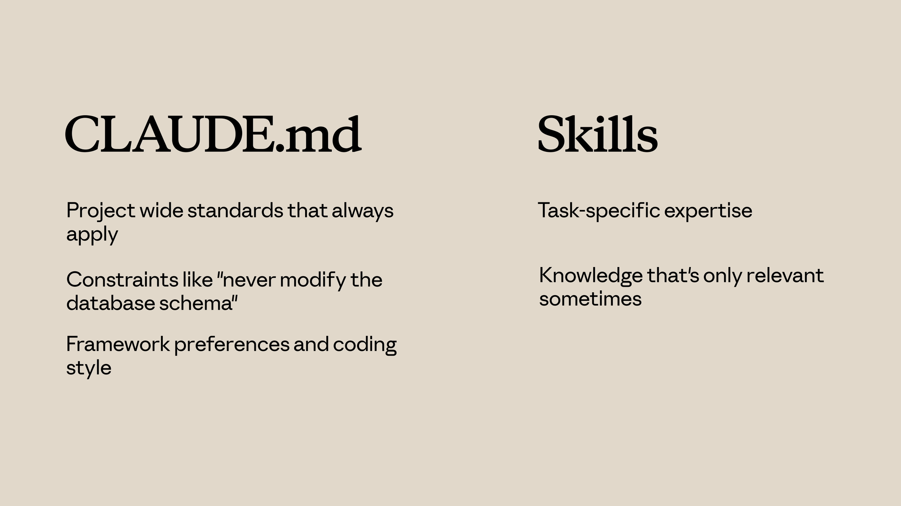

Skills и другие возможности
Чему научитесь
Около 15 минут
К концу урока вы сможете:
- сравнить skills с
CLAUDE.md, субагентами, hooks и MCP; - выбрать механизм под конкретную задачу;
- собрать набор, где каждый механизм делает свою работу.
Не всё надо делать skill
Видео, около 3 минут
Неверный выбор раздувает настройку. Ролик раскладывает, когда нужен skill, а когда постоянный файл, отдельный агент, событие или внешний инструмент.
Коротко
CLAUDE.mdвсегда в разговоре. Туда — постоянные стандарты проекта. Skill — по запросу, для конкретной процедуры.- Субагент работает в отдельном контексте и возвращает результат. Skill добавляет знание в текущий разговор.
- Hook срабатывает на событие: сохранение файла, вызов инструмента. Skill срабатывает на то, о чём вы попросили.
- MCP-сервер даёт внешние инструменты. Это другая категория, не замена инструкции.
- Их можно сочетать. Не нужно запихивать всё в один механизм.
CLAUDE.md или skill
CLAUDE.md попадает в каждую сессию этого проекта. «Пиши TypeScript в strict mode» живёт там, потому что правило верно и когда вы пишете код, и когда чините тест.
Skill присоединяется, когда запрос совпал. Чеклист ревью не обязан висеть в контексте, пока вы добавляете кнопку.

| CLAUDE.md | Skill | |
|---|---|---|
| Когда грузится | Всегда | Когда запрос совпал или вы вызвали /имя |
| Что класть | Стандарты, запреты, стиль, которые верны всегда | Процедуры и знания, нужные иногда |
| Пример | «Не меняй схему базы» | Пошаговое ревью PR |
Skill или субагент
Skill дописывает инструкции в текущий разговор. История, открытые файлы и ваш вопрос остаются рядом.
Субагент получает задачу, работает в чистом контексте и возвращает итог. Основной разговор не забивается промежуточными поисками по репозиторию.
Субагент уместен, когда работу надо делегировать, когда ей нужен другой набор инструментов или когда промежуточные шаги не должны смешиваться с вашей сессией. Skill уместен, когда знание должно вести текущую задачу от начала до конца.
Skill или hook
Hook — реакция на событие. Например, прогнать линтер каждый раз, когда Claude сохраняет файл, или проверить ввод до определённого вызова инструмента. Вам не нужно просить об этом в чате.
Skill — реакция на просьбу. Он меняет то, как Claude рассуждает над задачей, а не запускает побочное действие на каждое сохранение.
- Hook: «на каждое сохранение», «перед таким-то инструментом», автоматическое следствие действия.
- Skill: «когда просят ревью», «как рассуждать про доступность», гайд, а не триггер.
MCP — это инструменты, не память
MCP-сервер подключает внешние возможности: трекер задач, базу, браузер, внутренний API. Skill может сказать «заведи тикет так-то», но сам тикет создаёт инструмент. Путать их стоит так: skill — как делать, MCP — чем делать, если этого нет среди встроенных инструментов Claude Code.
Как это живёт вместе
CLAUDE.md— постоянные правила проекта.- Skills — процедуры, которые подключаются по теме.
- Hooks — автоматические действия на события.
- Субагенты — изолированная работа, которую вернули итогом.
- MCP — внешние системы.
Один рабочий набор может включать все пять. Skill берут, когда знание должно включаться само, как только тема релевантна, и оставляют в покое механизмы, которые лучше ловят события или ходят во внешние системы.
Вопросы к себе
- Откройте свой
CLAUDE.md. Что из него нужно только иногда и раздувает каждый разговор? - Какая боль команды — «Claude забывает процедуру», «надо автоматически гонять проверку» или «надо сходить в трекер»? Это три разных механизма.
Дальше
Дальше — как отдать skill команде: через git, плагин или корпоративные настройки, и как явно подключить его к своему субагенту.
Оригинал урока: Skills vs. other Claude Code features